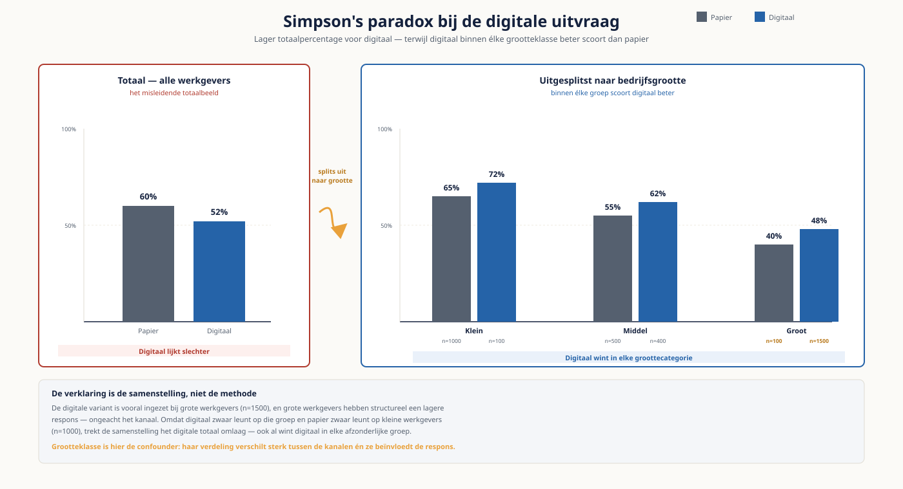

Deel 18 — Data-analyse voor besluitvorming
Niveau 2 — Praktijk · Reader
Voorbereiding, geen vervanging
Deze cursusmap is onafhankelijk ontwikkeld door Ductus B.V. Ductus is niet gelieerd aan, geaccrediteerd door of goedgekeurd door DAMA International, IIBA, IAPP, de EDM Association of Microsoft.
Dit materiaal bereidt voor op de genoemde examens en vervangt het officiële examenmateriaal niet. Bodies of knowledge, handboeken en examenblueprints worden hier niet gereproduceerd; deelnemers schaffen die bronnen zelf aan.
Alle genoemde merken zijn eigendom van hun respectieve houders. Examengegevens gecontroleerd in augustus 2026 — verifieer vóór inschrijving bij de bron.
1. Waar dit deel over gaat
In deel 5 leerde je een afgebakende vraag beantwoorden. Hier begint het bij een bestuurlijke vraag die niet afgebakend is, die door meerdere mensen anders wordt begrepen, en waarvan het antwoord invloed heeft op een besluit dat geld kost. Dat vraagt andere vaardigheden dan rekenen.
De rode draad van dit deel is onzekerheid. Een analist op niveau 1 rapporteert een getal. Een analist op niveau 2 rapporteert een getal met een marge, benoemt wat hij niet kan uitsluiten, en zegt welke uitkomst zijn advies zou veranderen. Dat laatste is wat een besluitnemer daadwerkelijk nodig heeft.
Leerdoelen
- Je vertaalt een bestuurlijke vraag naar een toetsbare hypothese met een expliciete beslisregel.
- Je beoordeelt databronnen op geschiktheid, herkomst en dekking vóórdat je begint.
- Je schrijft SQL met CTE’s, window functions en set-operaties.
- Je onderscheidt significantie van effectgrootte en rapporteert beide.
- Je ontwerpt een A/B-test met een vooraf bepaalde steekproefgrootte en stopregel.
- Je herkent Simpson’s paradox en weet wanneer je wel en niet mag uitsplitsen.
- Je maakt een forecast en toetst hem tegen de werkelijkheid met backtesting.
2. Van bestuurlijke vraag naar hypothese
"Werkt onze deelnemerscommunicatie?" is geen analyseerbare vraag. Hij bevat geen populatie, geen maat, geen periode en geen beslisregel. De vertaalslag naar iets toetsbaars is het werk waar je op niveau 2 voor wordt betaald.
Vier elementen van een toetsbare vraag
- Populatie: over wie gaat het, en wie valt er expliciet buiten?
- Maat: wat meten we precies, en volgens welke definitie? Verwijs naar het begrippenkader.
- Periode: over welk tijdvak, en met welke peildatum?
- Beslisregel: welke uitkomst leidt tot welk besluit? Zonder dit is er geen analyse maar nieuwsgierigheid.
| Zoals gesteld | Zoals toetsbaar |
|---|---|
| Werkt onze deelnemerscommunicatie? | Van de actieve deelnemers tussen 55 en 65 die in Q1 de pensioenbrief ontvingen, logde binnen dertig dagen een hoger aandeel in op het portaal dan van de vergelijkbare groep die hem niet ontving. Bij een verschil boven de vijf procentpunt breiden we de verzending uit. |
| Zijn onze werkgevers tevreden? | De gemiddelde beoordeling van werkgevers met meer dan vijftig deelnemers is in 2026 gestegen ten opzichte van 2025. Bij een daling van meer dan een halve punt herzien we het accountmanagementmodel. |
De beslisregel vóór de analyse
Leg de beslisregel schriftelijk vast vóórdat je de uitkomst kent, en laat de opdrachtgever hem bevestigen. Dat voorkomt de meest voorkomende vorm van misbruik: het verschuiven van de grens nadat de uitkomst bekend is. Wie dat vooraf regelt, hoeft achteraf geen discussie te voeren over of vier procentpunt "ook al wel wat" is.
3. Databronnen beoordelen
Voordat je rekent, beoordeel je waarmee je rekent. Vijf vragen, in deze volgorde.
| Vraag | Waar je op let | Bij Meridiaan |
|---|---|---|
| Dekking | Wie ontbreekt er, en verschilt die groep van de rest? | Deelnemers zonder e-mailadres ontbreken in elke digitale meting |
| Herkomst | Uit welk systeem komt het, via welke keten? | De lineage uit deel 13; let op filters onderweg |
| Definitie | Welke definitie is toegepast, en door wie vastgesteld? | Vier varianten van "actieve deelnemer" |
| Actualiteit | Hoe oud is het, en is dat oud genoeg om te storen? | Premiegegevens lopen drie dagen achter |
| Kwaliteit | Wat weten we uit de kwaliteitsmeting van deel 15? | Dummywaarden, weeskinderen, dubbelen |
Deze beoordeling hoort in de verantwoording, niet alleen in je hoofd. Een analyse waarvan de bronbeoordeling ontbreekt, is niet te beoordelen door iemand anders — en dat is precies wat een tweede analist of een auditor wil doen.
4. SQL gevorderd
Drie constructies dekken vrijwel alles wat je op dit niveau nodig hebt.
Common table expressions
Een CTE is een benoemde tussenstap. Hij maakt een query leesbaar en toetsbaar: elke stap is apart uit te voeren en te controleren. Een query van vijftig regels zonder CTE’s is niet te reviewen, en een analyse die niemand kan reviewen, is geen analyse maar een bewering.
Window functions
| Functie | Wat het doet | Toepassing bij Meridiaan |
|---|---|---|
| ROW_NUMBER | Nummert rijen binnen een groep | De meest recente mutatie per deelnemer selecteren |
| RANK en DENSE_RANK | Rangschikt met of zonder gaten bij gelijke waarden | Top tien werkgevers per premie-inkomsten |
| LAG en LEAD | Kijkt naar de vorige of volgende rij | De verandering ten opzichte van het vorige kwartaal |
| SUM OVER | Cumulatief of voortschrijdend totaal | Opbouw over de tijd, of een voortschrijdend gemiddelde |
| NTILE | Verdeelt in gelijke groepen | Deelnemers in kwintielen naar aanspraak |
Het belangrijkste inzicht: een window function aggregeert zonder rijen samen te voegen. Daarmee kun je een individuele waarde naast een groepswaarde zetten — bijvoorbeeld de premie van een werkgever naast het sectorgemiddelde — zonder een tweede query of een join.
Set-operaties
UNION, INTERSECT en EXCEPT zijn onderschat. Ze beantwoorden vragen over verschillen tussen verzamelingen direct: welke deelnemers staan wel in de rapportage van Financiën en niet in die van Werkgeversbeheer? Dat is één EXCEPT, en het is de snelste manier om de discussie uit niveau 1 te beslechten.
5. Significantie en effectgrootte
Dit is het onderdeel waar de meeste schade wordt aangericht, in beide richtingen: door significantie te verwarren met belang, en door effectgrootte te negeren.
| Begrip | Wat het zegt | Wat het níét zegt |
|---|---|---|
| P-waarde | Hoe waarschijnlijk dit resultaat is als er geen effect zou zijn | Hoe groot het effect is, of hoe waarschijnlijk je hypothese is |
| Significantie | Dat het verschil waarschijnlijk niet louter toeval is | Dat het verschil ertoe doet |
| Effectgrootte | Hoe groot het verschil is, in begrijpelijke eenheden | Of het verschil betrouwbaar is |
| Betrouwbaarheidsinterval | De marge waarbinnen de werkelijke waarde vermoedelijk ligt | Een garantie |
Bij grote steekproeven wordt vrijwel elk verschil significant. Bij 340.000 deelnemers is een verschil van 0,2 procentpunt statistisch significant en bestuurlijk betekenisloos. Rapporteer daarom altijd de effectgrootte en het interval, en laat de significantie een bijzin zijn.
De formulering die werkt
Niet: "het verschil is significant (p < 0,05)." Wel: "de groep die de brief ontving logde 6,4 procentpunt vaker in, met een marge van 2,1 procentpunt. Dat verschil is groot genoeg om de verzending uit te breiden volgens de vooraf afgesproken grens van vijf procentpunt." Een bestuurder kan met de tweede zin iets; met de eerste niet.
6. A/B-testen
Een experiment is de enige manier om een oorzakelijke uitspraak te doen zonder aannames over confounders. Dat maakt het krachtig en het maakt de opzet kritisch: fouten in het ontwerp zijn achteraf niet te repareren.
Zes ontwerpbeslissingen, vooraf
- De eenheid van randomisatie: individuele deelnemers, of hele werkgevers? Bij werkgevers is de effectieve steekproef veel kleiner dan het aantal deelnemers.
- De uitkomstmaat, met definitie en meetmoment. Eén primaire maat; de rest is secundair en verkennend.
- De steekproefgrootte, berekend op het kleinste effect dat je wilt kunnen aantonen. Te klein betekent dat je een echt effect mist.
- De looptijd, vooraf vastgelegd. Niet stoppen zodra het significant is — dat is de meest voorkomende vorm van p-hacking.
- De stopregel bij schade: wanneer breek je af omdat de behandelde groep nadeel ondervindt?
- Wat je doet bij een niet-significant resultaat. Dat is geen mislukking maar een uitkomst, en die hoort ook gerapporteerd.
Wat vaak misgaat
- Randomiseren op individu terwijl de interventie op groepsniveau werkt. Een brief aan alle deelnemers van één werkgever beïnvloedt de collega’s; dan is de werkgever de eenheid.
- Meerdere uitkomstmaten testen en de significante rapporteren. Bij twintig maten is er gemiddeld één significant zonder dat er iets aan de hand is.
- Halverwege kijken en stoppen bij een gunstig moment. Wie tussentijds meekijkt zonder correctie, vindt vroeg of laat een effect dat er niet is.
- Een controlegroep die systematisch verschilt, bijvoorbeeld doordat de behandelde groep is geselecteerd op bereikbaarheid.
7. Cohort, funnel en segmentatie
- Cohortanalyse volgt groepen die op hetzelfde moment zijn ingestroomd. Zij maakt zichtbaar of een verandering aan de tijd ligt of aan de samenstelling van de instroom — een onderscheid dat in totalen onzichtbaar blijft.
- Funnelanalyse volgt uitval per stap in een proces. Bij Meridiaan bruikbaar voor de waardeoverdracht: aangevraagd, beoordeeld, uitgevoerd, afgerond. Let op de definitie van elke stap; ambiguïteit daar verplaatst de uitval.
- Segmentatie splitst een populatie in groepen. Zij is nuttig om te verklaren en riskant om op te sturen: hoe verder je uitsplitst, hoe kleiner de groepen en hoe groter de kans dat je ruis voor patroon aanziet.
Voor alle drie geldt dezelfde discipline: bepaal de indeling vóór je de uitkomsten ziet. Achteraf een segment kiezen waarin het effect wel zichtbaar is, is een van de moeilijkst te weerleggen vormen van zelfbedrog.
8. Simpson’s paradox
Een verband dat in de totalen de ene kant op wijst en in elke subgroep de andere kant op. Het is geen curiositeit maar een dagelijks risico, en het is de reden dat uitsplitsen soms verplicht is.
Voorbeeld bij Meridiaan: de digitale uitvraag heeft over alle werkgevers heen een lagere respons dan de papieren variant. Splits je uit naar bedrijfsgrootte, dan scoort digitaal binnen elke groottecategorie beter. De verklaring is de samenstelling: de digitale variant is vooral bij grote werkgevers ingezet, en grote werkgevers hebben structureel een lagere respons.
Wanneer uitsplitsen en wanneer niet
- Splits uit als de verdeling van een derde variabele tussen de groepen verschilt en die variabele de uitkomst beïnvloedt. Dat is de definitie van een confounder.
- Splits niet uit op een variabele die ná de interventie is beïnvloed. Dan corrigeer je een deel van het effect weg.
- Bepaal vooraf op welke variabelen je uitsplitst en waarom. Een uitsplitsing die je pas bedenkt nadat het totaal je niet bevalt, is geen analyse maar een zoektocht.

9. Forecasting
Voor de meeste bestuurlijke vragen volstaat eenvoud. Begin bij het naïeve model en toon aan dat iets ingewikkelders beter is voordat je het gebruikt.
| Model | Wat het doet | Wanneer het volstaat |
|---|---|---|
| Naïef | De volgende periode is gelijk aan de vorige | Als vertrekpunt en als ondergrens voor elk ander model |
| Voortschrijdend gemiddelde | Middelt over een venster | Bij ruis zonder duidelijke trend |
| Trend | Extrapoleert een lijn | Bij stabiele groei of krimp over meerdere jaren |
| Trend met seizoen | Voegt een terugkerend patroon toe | Bij kwartaal- of maandpatronen, zoals premie-inning |
Backtesting
Toets je model op historie die het niet heeft gezien: train op de periode tot vorig jaar en voorspel het afgelopen jaar. Vergelijk de fout met die van het naïeve model. Is hij niet kleiner, gebruik dan het naïeve model — dat is eerlijker en goedkoper.
Rapporteer altijd een interval en niet één getal. Een forecast zonder marge wordt gelezen als een belofte, en dat is precies waar het vertrouwen in analyse sneuvelt.
10. Zes valkuilen
- Significantie rapporteren zonder effectgrootte, waardoor een betekenisloos verschil beleid wordt.
- De beslisregel pas vaststellen nadat de uitkomst bekend is.
- Tussentijds meekijken bij een experiment en stoppen op een gunstig moment.
- Uitsplitsen tot er een segment is waarin het effect zichtbaar wordt.
- Regressie naar het gemiddelde aanzien voor het effect van een maatregel: wie een slecht kwartaal aanpakt, ziet vrijwel altijd verbetering.
- Een forecast als één getal rapporteren.
11. Onzekerheid rapporteren
Het onderscheid tussen niveau 1 en niveau 2 zit hier. Vier elementen horen in elke oplevering.
- Het puntresultaat, in begrijpelijke eenheden.
- De marge eromheen, en wat die marge betekent voor het besluit.
- Wat je niet kunt uitsluiten: welke alternatieve verklaring blijft staan?
- Welke uitkomst je advies zou hebben veranderd. Dat maakt zichtbaar hoe stevig het advies is.
De vraag van de bestuurder
"Hoe zeker weet je dit?" is geen uitnodiging tot een college over betrouwbaarheidsintervallen. Het beste antwoord is een zin: "als ik het mis heb, is dat vermoedelijk doordat de deelnemers zonder e-mailadres ontbreken; die groep is 4,2 procent en waarschijnlijk minder digitaal actief, dus mijn schatting is eerder te hoog dan te laag."
12. Examenrelevantie
Dit deel dekt de eerste vier domeinen van de IIBA-CBDA: het identificeren van de onderzoeksvraag, het ontsluiten van databronnen, het analyseren van data, en het interpreteren en rapporteren van resultaten. Deel 19 dekt de laatste twee. Daarnaast raakt dit deel het CDMP-kennisgebied Big Data & Data Science.
Aandachtspunten
- Het onderscheid tussen een vraag, een hypothese en een beslisregel.
- Bronbeoordeling als expliciete stap vóór de analyse.
- Significantie versus effectgrootte, en het rapporteren van onzekerheid.
- Experimentopzet: randomisatie-eenheid, steekproefgrootte, stopregel.
- Engels: research question, hypothesis, sampling, confidence interval, effect size, confounding, A/B test, cohort analysis.
Studiemateriaal bij dit deel
Kernbron voor de CBDA: de Guide to Business Data Analytics van IIBA, beschikbaar voor leden, plus het certificeringshandboek en de officiële voorbeeldvragen.
Voor het CDMP: het hoofdstuk over big data and data science in de DAMA-DMBOK2 Revised Edition.
Examenopzet en inschrijving: iiba.org en cdmp.info.
Dit materiaal reproduceert geen van deze bronnen en vervangt ze niet.